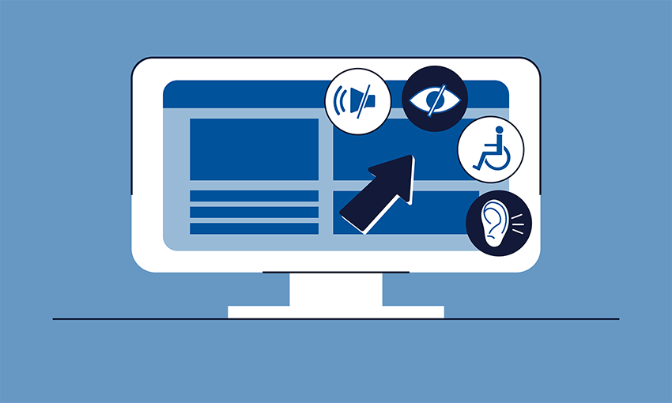

Final Thoughts on CSIT 121 Web Standards
Important Skills Learned in CSIT 121
This course was my first exposure to Hypertext Markup Language (HTML), Cascading Style Sheets (CSS), and JavaScript (JS), which are the foundation for creating interactive web pages. Overall, in CSIT 121 Web Development class, I learned how to structure a HTML document using specific tags, such as header tags and paragraph tags. I learned at the beginning of the course that the main parts of an element are: an opening tag, a closing tag, and the content of the element. Every HTML element should contain an opening tag, content, and a closing tag. In addition, I learned that attributes contain extra information about HTML elements that you do not want to appear in the actual content of a webpage. The following is an example of a class attribute:
<p class="final-web-standards-reflection">Final Project</div>One of my favorite aspects about this course was the use of Github to submit all of my assignments. This provided me with a taste of real world experience by introducing me to the steps of checking in code to a source repository. In addition, this repository can be used to store all of my best accomplishments throughout my CCBC learning journey.
Future Goals
I would like to transition into the information technology (IT) field by participating in an internship. This internship experience would enable me to apply the skills that I have gained in my first two classes at CCBC. This way, I can master these skills over time and learn new skills related to a specific area in IT.